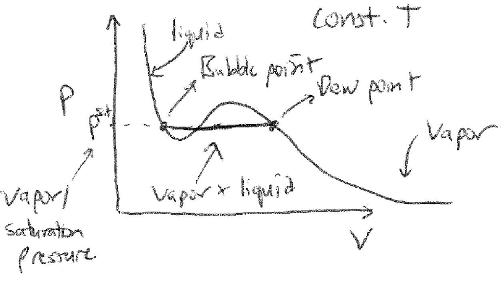

Equilibrium in single-component systems#
Recommended textbooks#
Tester and Modell, Ch. 6.2, 6.4, 7.1, 7.2, 8.1-8.3
Topics in this lecture#
Equilibrium conditions
Phase behavior of single-component system
PVT behavior
Equilibrium conditions#
In the last lecture we demonstrated that for simple, single-component systems at equilibrium, certain thermodynamic potentials are either minimized or maximized depending on the parameters held constant in that system. We will now expand upon the concept that a system at equilibrium is stable with respect to variations, then apply this framework to study conditions of equilibrium in multicomponent systems. Based on our prior reasoning, we can determine if a given system is at equilibrium by its response to a small variation in thermodynamic parameters; in an isolated system at equilibrium, small variations will necessarily decrease the entropy. If the system is stable with respect to any proposed variation, meaning that any variation decreases the entropy, then the variation is impossible and the original state of the system is at equilibrium. Testing such “virtual” variations was effectively the procedure used in the preceding lecture to illustrate how other thermodynamic potentials respond at equilibrium. Here, we will formalize the notation for analyzing the response of a system to small variations; later, we will consider stability with respect to very large variations in system parameters.
Consider an isolated system. We will write an expression for the effect of a small perturbation with respect to a parameter \(z_i\) on the entropy, \(\delta \underline{S}\), recognizing that the perturbation is small. There are \(n+2\) independently variable parameters (i.e. \(\underline{U}\),\(\underline{V}\), \(N_1\), etc.). We will now consider calculating the change in the entropy, \(\Delta \underline{S}\), associated with a series of small perturbations \(\delta z_i\), where \(z_i\) refers to one of the \(n+2\) independently variable parameters; if all the \(\delta z_i\) are sufficiently small, we can calculate the change in entropy by Taylor expanding around the original value of \(S\):
We can continue this framework for higher order derivatives. Here, note the notation we use, as adopted from the section on Maxwell reciprocity - the subscripts on \(\underline{S}\) indicates partial derivative(s) with respect to the subscripted variable At equilibrium, we have now established two conditions that must be true:
If I were to plot \(\underline{S}\) with respect to all possible \(z_i\), the first condition indicates that there is a local minimum or maximum in \(\underline{S}\), while the second condition ensures that it is a maximum, and thus small perturbations to the system will decrease the entropy.
Let us now consider the conditions of equilibrium for a multiphase system; that is, a complex system which can be divided into multiple simple subsystems representing multiple phases. Each phase has its own unique properties, but all phases consist of the same components. For example, the liquid state of a molecule is in equilibrium with the vapor phase of the same molecule would be an example of a multiphase, single-component system; in this case the two phases correspond to different states of aggregation and are distinguished by different densities. Another example would be a mixture of oil and water that separates into two liquid phases, one of which is primarily oil and the other of which is primarily water. This system would be an example of a multiphase, multicomponent system, where the compositions of each phase are distinct but again the same components exist in each phase. In general, it will be hard to identify physical “boundaries” to each phase in a multiphase system; however, we can construct virtual walls that divides a complex isolated system into multiple subsystems, each of which represents a different phase.
 {width=”50%”}
{width=”50%”}
We will now derive constraints placed on intensive variables of a multiphase system. Let us consider a general case where a system has two phases, \((1)\) and \((2)\), and two components, \(A\) and \(B\). We can imagine an isolated, complex system that is divided into two simple subsystems, each corresponding to a phase. Our subsystems are connected such that they can exchange heat, volume, and material, such that the system is subject to the following constraints at equilibrium:
Each of these thermodynamic parameters has a corresponding conjugate variable associated with its individual phase (e.g. \(T^{(1)}\) and \(T^{(2)}\)). The first constraint is from the condition that the entropy reaches an extremum at equilibrium as discussed above, while the rest are due to the boundaries of the isolated system. Using the entropy representation of the Fundamental Relation, we can then write:
The important part here is that the variation in the entropy must be zero with respect to all possible variations - that is, for any variation in any other parameter. Substituting in the constraints above gives:
In the most general case, there is no constraint on the value of \(\delta \underline{U}^{(1)}\) or the variation of any other parameter associated with the individual simple systems. If there are multiple non-zero parameters that vary, then the condition that \(\delta \underline{S} = 0\) for the isolated, combined system can only be satisfied for all possible variations in the parameters if each prefactor on the varying parameter is zero. This means that equilibrium is satisfied only if:
This assumes that the virtual boundary between the two systems is diathermal (\(\delta \underline{U}^{(1)} \ne 0\)), movable (\(\delta \underline{V}^{(1)} \ne 0\)), and permeable to both components (\(\delta N_A^{(1)} \ne 0\) and \(\delta N_B^{(1)} \ne 0\)). The conditions for equilibrium would be more limited if the wall further restrains the system - for example, if the wall is rigid, then \(\delta \underline{V}^{(1)} = \delta \underline{V}^{(2)} = 0\), so substituting this expression into the above logic indicates that there would no longer be any condition on the equivalence of the pressure of the two subsystems, although all other conditions would be met. There is an interesting caveat to this which is that if we set the boundaries of our two phases such that \(n+1\) parameters can vary (e.g. we eliminate one possible \(z_i\) from varying; so we could enforce rigid walls, for example), we would find that all \(n+2\) intensive variables are still equal between the two phases even though this is not strictly required by the above framework because the Gibbs-Duhem relation enforces a relationship between 1 intensive variable and the other \(n+1\) intensive variables.
Therefore, from this analysis we derive the following general rule: if two systems are able to exchange the extensive parameter \(X\), then at equilibrium the conjugate intensive parameter \(F\) (a first derivative of the Fundamental Relation) will be equal between the two systems. These conditions are equally applicable to phases within a single system or to the interactions between a system and a reservoir.
Phase equilibrium in single-component systems#
The last section imposes constraints on the intensive parameters of multiphase, multicomponent systems. We will now more fully explore the phase behavior of single-component systems. In a single-component system, each possible phase typically refers to a distinct state of aggregation, such as a solid, liquid, or vapor (although not necessarily; some systems exhibit complex phases that differ in their physical properties but could all broadly be considered liquid-like, for example). We want to first ask under what conditions a system exhibits a single phase or multiple phases. What we first recognize is that it is most natural to discuss the behavior of the Gibbs free energy as the thermodynamic potential relevant to phase behavior. The natural variables of the Gibbs free energy are \(T\), \(P\), and \(N\), meaning that the Gibbs free energy is minimized at equilibrium if the system can maintain a constant temperature and pressure via interactions with external thermal and volume reservoirs. Since most laboratory conditions meet these constraints, and because the temperature and pressure are control variables that can be manipulated experimentally, we will analyze phase behavior using the Gibbs free energy.
In the last lecture, we used Euler’s theorem to relate the Gibbs free energy to the chemical potential via the relation:
Let’s now consider a system which can form two possible phases, denoted by \((1)\) and \((2)\), with corresponding chemical potentials \(\mu^{(1)}\) and \(\mu^{(2)}\). Since we have established that at equilibrium the Gibbs free energy of the system will be minimized, the Euler integrated expression for the Gibbs free energy provides a straightforward relationship to determine which phase will be observed. Namely, at equilibrium in a single-component system at constant \(T\) and \(P\):
Recognizing that \(\underline{G}\) is minimized at equilibrium, and that the amount of material can freely exchange between the two phases, the following conditions are then obtained:
Only phase (1) is observed if \(\mu^{(1)} < \mu^{(2)}\).
Only phase (2) is observed if \(\mu^{(2)} < \mu^{(1)}\).
Both phase (1) and phase (2) are observed if \(\mu^{(1)} = \mu^{(2)}\).
Note that this last condition is fully consistent with our conditions of equilibrium described above. We thus see that the chemical potential emerges as the most important quantity for determining phase behavior, but in principle we cannot control this as easily as the temperature and pressure. However, recall that the Gibbs-Duhem equation from last lecture places a constraint on the \(n+2\) intensive variables of a thermodynamic potential such that only \(n+1\) are independently variable. For a single component system, the Gibbs-Duhem equation states:
where \(f_1\) is some function that is unknown and system specific. We can now further write a more general expression for \(\mu\) in terms of experimentally measurable quantities by expressing \(S\) and \(V\) as functions of \(T\) and \(P\) and integrating relative to a reference state:
Note that here we perform the integration by first integrating along an isobaric path at the reference state pressure, \(P^0\), then integrating along an isothermal path at the temperature of interest, \(T\). \(\mu^0\) is the reference state chemical potential. We can now further write out expressions for \(S(T,P)\) and \(V(T, P)\) by integrating their exact differentials:
Fortunately, these partial derivatives can be simplified by recognizing the definitions of three experimentally measurable materials parameters, which you have encountered on Problem Set 5:
Substituting these expressions into the exact differentials above, and recognizing the Maxwell relation \(\left ( \frac{\partial S}{\partial P} \right )_{T} = -\left ( \frac{\partial V}{\partial T} \right )_{P}\), gives:
All prefactors are now experimentally measurable system-specific parameters. Integrating each of these expressions from a reference state (again along an isobaric then isothermal path) and substituting into the prior expression for the chemical potential yields:
This expression is obviously quite complicated, with the only obvious simplification being the elimination of the term \(\int_{P^0}^P [\alpha V]_{T} dP\) because this integral is performed at constant \(P^0\) and thus the upper and lower limits of integration are the same. The key point, however, is that we have now reduced our expression for the chemical potential to be only a function of experimentally measurable parameters - that is, \(T\), \(P\), \(\alpha\), \(\beta\), and \(C_P\). We also have introduced parameters related to the reference state, as indicated by the superscript \(0\), but in general we can choose arbitrary values of \(S^0\) and \(\mu^0\) and need only know the physical values of \(P^0\), \(V^0\), and \(T^0\) for a reference state of interest.
PVT behavior in single-component systems#
The expression for the chemical potential presented above is fully defined if we know the materials parameters \(\alpha\), \(\beta\), \(C_P\), their temperature and pressure variations, and the pressure, volume, and temperature of a reference state. However, since \(\alpha\) and \(\beta\) themselves are defined in terms of the variation of the volume with respect to temperature and pressure, it is also equally reasonable to specify the behavior of \(C_P\) and the relationship between the pressure, volume, and temperature (i.e., the PVT behavior of a system). In other words, if we know the PVT behavior of a system we can fully specify its phase behavior because PVT behavior defines all parameters that appear in the expression for the chemical potential. The approach of specifying PVT behavior is much more prominent in the literature than specifying \(\alpha\) and \(\beta\) and hence is what we will follow here. We can visualize PVT behavior by plotting constant-temperature isotherms as a function of volume. Repeating these measurements for a series of temperatures would yield the \(PVT\) equation of state for the system, which reflects the fundamental equation for the system (since equations of state specify partial derivatives of the fundamental equation). An example \(P-V\) isotherm is plotted below:
{width=”80%”}
The behavior in this plot is typical of behavior described by a cubic equation of state, such as the well-known van der Waals equation of state. We can interpret this isotherm in terms of phase behavior as follows. If we were to prepare a system that is initially at equilibrium at a large value of \(V\), we would find that it is in a vapor phase. We then connect the system to a thermal reservoir at a fixed temperature and a volume reservoir with a controllable pressure, and imagine slowly increasing the pressure (or equivalently compressing the volume) at an infinitely slow rate, such that the system is always at equilibrium. We would find that the system would maintain a vapor state with a volume specified by the PVT isotherm until eventually a state of two-phase equilibrium is observed; specifically, since you started in the vapor state, you would observe a small amount of liquid form. The volume of the system for which this is observed is referred to as the dew point. As you continue to try to increase the pressure, you would observe more vapor phase condense to the liquid phase without the pressure changing until eventually the entire system is liquid. The pressure at which the vapor phase is in equilibrium with the liquid phase is also called the vapor pressure or equivalently the saturation pressure. Following from the discussion above, at this pressure and temperature the chemical potential of a molecule in the low-molar-volume liquid phase is equal to the chemical potential of a molecule in the high-molar-volume vapor phase. Note that we may have an equation of state able to define variations in P-V behavior for volumes that fall within this two-phase region; however, at equilibrium, these variations would not be observed, and instead the pressure would remain constant and any volume change can only be due to the conversion of material from one phase to another.
The transition from a vapor phase with a well-defined molar volume (or equivalently, density) to a liquid phase with a smaller molar volume is an example of a first-order phase transition. While modern nomenclature has slightly different definitions, a first-order phase transition is generally defined as a transition in which a first derivative of a thermodynamic potential with respect to some thermodynamic parameter is discontinuous. The volume is the first deriative of the Gibbs free energy with respect to pressure and the change in volume is discontinuous between the vapor and liquid states, satisfying this definition. Phase transitions between different states of aggregation all fit this criterion; the solid-liquid and solid-vapor transitions would also involve discontinuities in the volume.
First-order phase transitions are also distinguished by the relase or adsorption of latent heat during the transition. The latent heat is equal to the molar enthalpy difference, \(\Delta H\), between the two phases; since enthalpy is a state function, the enthalpy of a particular phase at a specific temperature and pressure is a material property that will differ between different phases, especially if the phases are different states of aggregation. Therefore, the transition between states of aggregation will either require the input or release of energy to account for these molar enthalpy differences (note that it is an enthalpy, not an energy, since the volumes of the states will generally be different as drawn above, requiring \(PV\) work to be done as well). Importantly, the latent heat is enthalpy that is added to or removed from a system without the system temperature changing, since it accounts for the transformation of material from one state to another. Thus, if we were to imagine slowly heating up a solid until it melts to a liquid, we would observe that the temperature would first increase (at a rate given by the heat capacity of the material) and then would plateau at the melting point of the material while the phase transition is occurring, as all heat being adsorbed would be used for the conversion of solid to liquid. Once the phase transition is complete, the temperature would continue to rise at a different rate given the different heat capacity of the liquid phase (as an interesting aside, the heat capacity of liquid phases are generally higher than either solid or vapor phases, because in the liquid phase you have both translational degrees of freedom like a vapor and vibrational degrees of freedom like a solid due to short-ranged intermolecular interactions). During this process, we would have to change the rate of heat flow to maintain a constant change of temperature, which would allow us to determine the magnitude of the latent heat and heat capacities of both phases - this observation is the operating principle behind differential scanning calorimetry.
 {width=”100%”}
{width=”100%”}